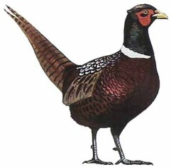

Lösung PUZZLE 22: Fasane, Hasen und Rehe

Annahme: x Fasane, y Hasen, z Rehe
Es gilt das Gleichungssystem: x + y + z = 100, 0.5x + 3y + 7z = 100
mit der Bedingung x, y und z natürliche Zahlen zwischen 1 und 98.
Das System führt auf die diophantische Gleichung 13x + 8y = 1200.
Die Gleichung ist lösbar, denn der ggT(13,8) = 1 ist Teiler von 1200.
Man muss also die Gleichung y = (1200 - 13x) / 8 = 150 - 13x/8 mit Bedingung y < 100 - x lösen.
x ist daher ein Vielfaches von 8; da weiter aus 100 - x = 150 - 13x/8 für x der Wert 80 folgt, kommen für x nur
noch die Werte 88 und 96 in Frage. x = 96 führt aber zu einem negativen y.
Daher gibt es nur die einzige Lösung: x = 88, y = 7 und z = 5.
Antwort: Es sind 88 Fasane, 7 Hasen und 5 Rehe.